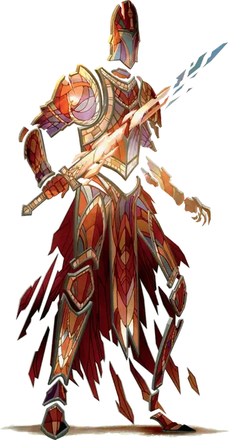

Стеклянный голем
Glasswork Golem
Средний Конструкт, без мировоззрения

Класс Доспеха 13 (природный доспех)
Хиты 36 (8к8)
Скорость 30 футов
| мод | спас | ||
|---|---|---|---|
| СИЛ | 13 | +1 | +1 |
| ЛОВ | 10 | +0 | +2 |
| ТЕЛ | 10 | +0 | +2 |
| мод | спас | ||
|---|---|---|---|
| ИНТ | 1 | −5 | −5 |
| МДР | 10 | +0 | +3 |
| ХАР | 1 | −5 | −5 |
Иммунитет к урону психическая энергия, яд
Иммунитет к состояниям глухота, испуг, истощение, окаменение, ослепление, отравление, очарование, паралич
Чувства слепое зрение 60 футов (слеп за его пределами), пассивное Восприятие 10
Опасность 2 (450 опыта)
Бонус мастерства +2
Особенности
Обманчивая внешность. Если голем находится в окне и неподвижен в начале боя, то он имеет преимущество в броске инициативы. Более того, если существо не наблюдало за движением или действием голема, это существо должно преуспеть в проверке Интеллекта (Расследование) Сл 18 для чтобы определить, что голем живой.
Неизменяемая форма. Голем обладает иммунитетом ко всем заклинаниям и эффектам, изменяющим его форму.
Регенерация. Голем восстанавливает 10 хитов в начале своего хода. Если он получает дробящий урон или урон звуком, эта особенность не действует в начале следующего хода голема. Голем умирает только если начинает свой ход с 0 хитов и не может регенерировать.
Необычная природа. Голему не требуется воздух, пища, вода или сон.
Действия
Мультиатака. Голем совершает две атаки Стеклянным мечом.
Стеклянный меч. Рукопашная атака оружием: +3 к попаданию, досягаемость 5 футов, одна цель. Попадание: 5 (1к8 + 1) рубящего урона.
Бонусные действия
Ослепительный свет (Перезарядка 5-6). Волшебный разноцветный свет исходит от голема в виде 15-футового конуса. Каждое существо в конусе должно преуспеть в спасброске Телосложения Сл 10, иначе станет ослеплённым на 1 минуту. Существо может повторять спасбросок в конце каждого своего хода, оканчивая на себе действие эффекта в случае успеха.